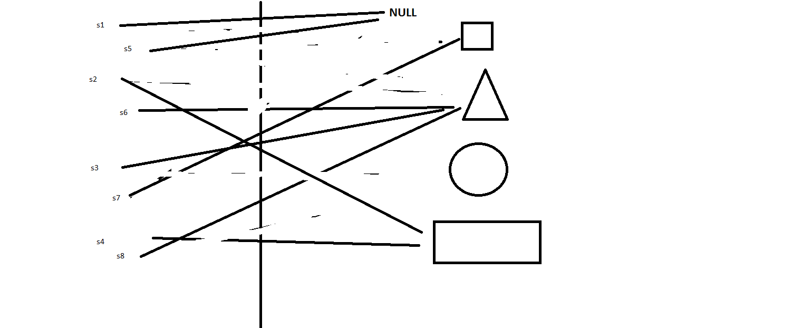

· EEM227
EEM227 Veri Yapıları: Quiz Çözümleri ve "Uzaktan Kumanda" Soruları
EEM227 – Veri Yapıları · 26.10.2014 · 16.10.2026
Bu yazı, Başkent Üniversitesi EEM227 Veri Yapıları dersinin 2013–2015 yıllarına ait quiz çözümlerini bir araya getiriyor. Öne çıkan konu Java'da referanslar: derste referans değişkenleri, nesneyi gösteren birer "uzaktan kumanda" gibi anlatılıyordu. Bir kumandayı başka bir nesneye çevirmek nesneyi değiştirmez; yalnızca kumandanın neyi gösterdiğini değiştirir. Orijinal BlueJ projeleri ve çözüm çizimi yazının sonunda ZIP olarak indirilebilir.
Quiz 1: Artık yıl
Bir yıl 4'e bölünüyorsa artık yıldır; ama 100'e bölünüp 400'e bölünmüyorsa değildir.
public class Quiz1Question1
{
public static void main()
{
Quiz1Question1 q1 = new Quiz1Question1();
q1.artikYil(1200);
q1.artikYil(1201);
q1.artikYil(1888);
q1.artikYil(1892);
q1.artikYil(1896);
q1.artikYil(1904);
q1.artikYil(1988);
q1.artikYil(1992);
q1.artikYil(1996);
q1.artikYil(2004);
q1.artikYil(2000);
q1.artikYil(1900);
}
public void artikYil ( int yil )
{
// Kodunuz buraya
if (yil % 4 == 0)
{
if (yil % 400 == 0)
{
System.out.println("Yıl :" + yil + ", artık yıldır.");
}
else if (yil % 100 == 0)
{
System.out.println("Yıl :" + yil + ", artık yıl değildir.");
}
else
{
System.out.println("Yıl :" + yil + ", artık yıldır.");
}
}
else
{
System.out.println("Yıl :" + yil + ", artık yıl değildir.");
}
}
}Sonuç: 1201 ve 1900 artık yıl değil; listedeki diğer bütün yıllar (1200 ve 2000 dahil) artık yıl.
Quiz 2: Kodun çıktısı ne?
public class Quiz2KodCikti
{
public static void main(String[] args) {
int count=1;
System.out.print(count++);
System.out.print(++count);
System.out.print(count++);
}
}133count++ önce değeri kullanır sonra artırır (1 yazar, count 2 olur); ++count önce artırır sonra kullanır (count 3 olur, 3 yazar); son count++ yine 3 yazar ve count 4 olur.
Sayı çift mi?
public class QuizSayiCiftMi
{
public boolean sayiCiftMi ( int sayi )
{
if (sayi % 2 == 0)
{
return true;
}
else
{
return false;
}
}
}Uzaktan kumanda sorusu: şekiller
Dört şekil nesnesi oluşturuluyor ve sekiz referans ("kumanda") bunlar arasında birbirine atanıyor. Soru: sonunda her kumanda neyi gösteriyor?
public class UzaktanKumandaSekilQuiz
{
private String sekilAdi ;
public UzaktanKumandaSekilQuiz( String pSekilAdi )
{
sekilAdi = pSekilAdi ;
}
public String toString ()
{
return "" + sekilAdi ;
}
public static void main( String [ ] args )
{
UzaktanKumandaSekilQuiz s1=new UzaktanKumandaSekilQuiz("Kare") ;
UzaktanKumandaSekilQuiz s2=new UzaktanKumandaSekilQuiz("Ucgen") ;
UzaktanKumandaSekilQuiz s3=new UzaktanKumandaSekilQuiz("Daire") ;
UzaktanKumandaSekilQuiz s4=new UzaktanKumandaSekilQuiz("Dikdortgen") ;
UzaktanKumandaSekilQuiz s5=s1 ;
UzaktanKumandaSekilQuiz s6=s2 ;
UzaktanKumandaSekilQuiz s7=null ;
UzaktanKumandaSekilQuiz s8=s3 ;
s7 = s5 ;
s5 = s2 ;
s8 = s2 ;
s1 = null ;
s3 = s8 ;
s5 = s1 ;
s2 = s4 ;
System.out.println( s1 ) ;
System.out.println( s2 ) ;
System.out.println( s3 ) ;
System.out.println( s4 ) ;
System.out.println( s5 ) ;
System.out.println( s6 ) ;
System.out.println( s7 ) ;
System.out.println( s8 ) ;
}
}null
Dikdortgen
Ucgen
Dikdortgen
null
Ucgen
Kare
Ucgen
Çizimdeki ince ayrıntı: daireyi gösteren hiçbir kumanda kalmıyor. O nesneye artık ulaşılamaz; Java'da çöp toplayıcı (garbage collector) onu bellekten temizler.
Uzaktan kumanda sorusu: kare dizisi
Aynı fikir bu kez bir dizinin elemanlarıyla soruluyor.
public class Kare
{
public int Kenar;
}public class Program
{
public static void main()
{
Kare[] kareDizisi = new Kare[5];
int uzunluk = kareDizisi.length /2 +2;
for(int i=0;i<uzunluk;i++)
{
kareDizisi[i] = new Kare();
kareDizisi[i].Kenar = i * i + 10;
}
kareDizisi[4] = kareDizisi[2];
kareDizisi[3] = kareDizisi[1];
kareDizisi[1] = kareDizisi[3];
kareDizisi[2] = kareDizisi[2];
kareDizisi[1] = kareDizisi[4];
for(Kare k : kareDizisi)
{
if (k != null)
{
System.out.println(k.Kenar);
}
}
}
}10
14
14
11
14uzunluk 5 / 2 + 2 = 4 olduğu için yalnız ilk dört eleman için nesne oluşturulur (kenarları 10, 11, 14, 19). Atamalardan sonra kenarı 19 olan kareyi gösteren eleman kalmaz; 14'lük kareyi ise üç ayrı eleman gösterir.
Not: Çıktılar, sunucuda Java kurulu olmadığı için kod satır satır izlenerek hesaplandı; şekil sorusunun sonucu dersin çözüm çizimiyle birebir aynı.